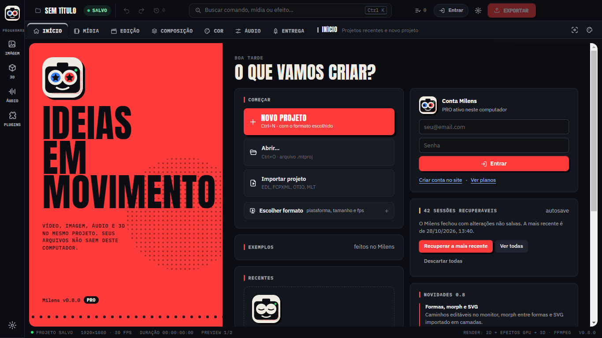
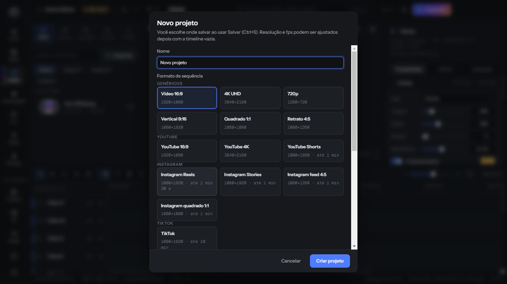
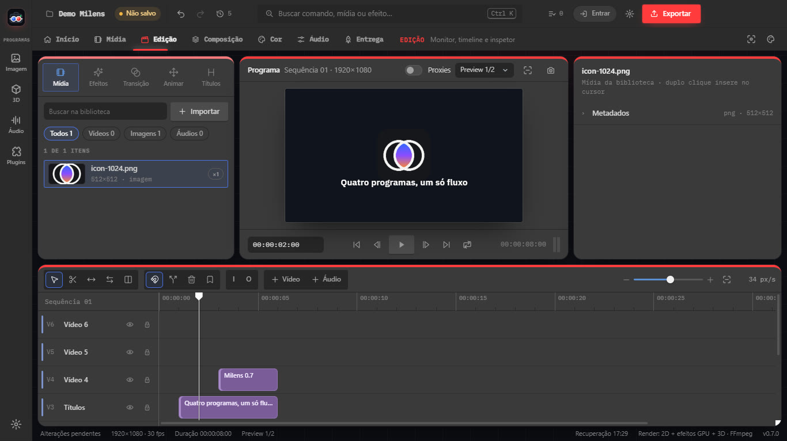

1. Instalar
Crie uma conta em Minha conta e clique em Baixar o Lite. O instalador (118 MB) é conferido por SHA-256 antes de salvar. Abra o Milens-Lite-Setup.exe; o Windows pode mostrar o aviso do SmartScreen porque o programa ainda não é assinado: clique em Mais informações → Executar assim mesmo.

2. Novo projeto
Ctrl+N. Escolha a plataforma (Reels, TikTok, Shorts, YouTube, feed, story) ou um formato genérico. O tamanho, os fps e as guias de zona segura vêm prontos. Dá para mudar depois, com a timeline vazia, no inspetor da sequência (Plataforma e Guias).

3. Mídia
Ctrl+I ou arraste arquivos para a biblioteca. Vídeos 4K ganham proxies automaticamente; a reprodução fica leve e a exportação usa o original. Mídia offline aparece em vermelho e pode ser religada em Arquivo → Religar.

4. Timeline
Arraste clipes para as trilhas. C corta, V seleciona, I/O marcam entrada e saída, Espaço reproduz. Trilhas têm olho (visível) e cadeado (travada). O ímã alinha ao clipe vizinho.

5. Animar
Selecione um clipe, abra a aba Animação do inspetor e clique no losango ao lado de uma propriedade para criar um keyframe. Mova o cursor, mude o valor: o segundo keyframe aparece. O editor de curvas (Ctrl+Shift+K) ajusta a aceleração. A câmera virtual fica no módulo Composição.

6. Clipes de vídeos longos
Ferramentas → Clipes… (Ctrl+Shift+C). Adicione trechos com os pontos de entrada e saída, ou use Dividir automaticamente a cada N segundos. Dê nome, escolha a plataforma de cada clipe e clique em Exportar clipes: cada trecho vira um arquivo na fila.
7. Exportar
Ctrl+E. Escolha a predefinição (plataforma ou formato), a pasta e o nome. O painel mostra tamanho estimado e tempo previsto. A fila (Ctrl+Shift+Q) exporta vários projetos em sequência. No Lite, a saída vai até 1080p com marca d'água.

8. Importar projetos de outros editores
Arquivo → Importar projeto aceita EDL (CMX 3600), FCPXML, XML do Final Cut 7, OTIO e MLT/Kdenlive. O Milens recria as trilhas e os cortes e pede para religar a mídia. Arquivos com entidades externas, maiores que 20 MB ou com mídia fora do seu computador são recusados por segurança.
9. Ativar o PRO
Assine em Planos. A chave aparece na sua conta e por e-mail. No programa: Ctrl+, → Licença → cole a chave → Ativar. Baixe o instalador PRO pela conta: ele traz o Imagem, o 3D e os plugins, que não existem no Lite.
10. Monitor externo
Ctrl+Shift+M abre o monitor em tela cheia na segunda tela. Serve para ver o resultado sem a interface enquanto edita, e para mostrar ao cliente.